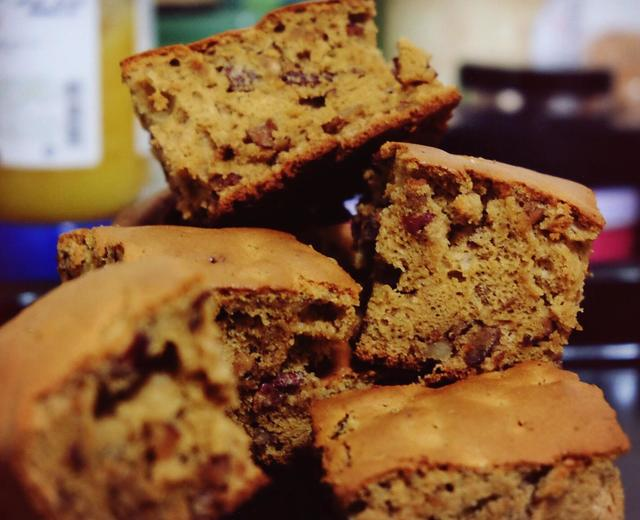

Date Cake

Description
This is a traditional Chinese cake made with dates. You can also add nuts to enhance the flavor! If you want to surprise your guests with an authentic Chinese dessert, give it a try. It's both delicious and healthy!
Ingredients
- 4 Egg yolks
- 4 Egg whites
- 70g Pitted red dates
- 30g Walnut pieces
- 50g Milk (use more for a moist texture, less for a drier texture)
- 20g White rum (key to the flavor, use 10g for a milder taste)
- 20g Honey (add if using strongly aromatic honey; optional if using regular honey)
- 120g Cake flour
- 2g Baking soda
- 10g Brown sugar (to add to egg yolks)
- 50g Brown sugar (to add to egg whites)
- 50g or 70g Flavorless vegetable oil (such as corn oil)
- 0.5g Salt (optional, adjust to taste)
Steps
- Wash the red dates, remove the seeds, and chop them into small pieces. Crush the walnuts into small bits and mix them with the red dates. Pour in milk and rum, mix well, and let the mixture sit until the liquid is fully absorbed by the fruit.
- Add 50g to 70g of vegetable oil (depending on your taste) to the soaked fruit, mix well, and set aside.
- Beat the egg yolks, add 10g of brown sugar (crush the brown sugar beforehand using a blender or a rolling pin as it tends to clump), then heat water over low heat. Place the bowl with the egg yolks and brown sugar into the hot water and stir quickly (make sure to stir continuously) until the sugar and egg yolks are well combined. Note: The bowl containing the ingredients should be placed in the hot water to melt the ingredients through indirect heat; do not add the ingredients directly to the water or add water to the ingredients.
- The resulting mixture of brown sugar and egg yolks should be slightly thick.
- Pour the previously prepared red date and walnut paste into the egg yolk mixture, add honey, and mix well. Set aside.
- Use an electric mixer on high speed to beat the egg whites. Gradually add 50g of brown sugar in three parts, beating until the mixture is almost stiff and peaks form that are not easily bent (be careful not to overbeat, as this can cause cracks when baking).
- Fold one-third of the beaten egg whites into the red date and egg yolk mixture prepared in step 5, mixing quickly and gently until just combined (do not overmix).
- Add the mixture from step 7 to the remaining egg whites, and fold quickly and gently until well combined (do not overmix; just combine evenly).
- Sift the cake flour, baking soda, and salt (optional) into the batter and fold quickly until just combined.
- Pour the batter into a mold and tap it gently on a towel to remove any air bubbles. Preheat the oven to 170°C (338°F) with both the upper and lower elements on. After preheating for 10 minutes, place the mold on the third rack from the bottom (my oven has four racks total) and bake for about 30 minutes. (Oven temperatures may vary, so adjust the temperature and time according to your oven. If the top of the cake browns too quickly but the cake isn't fully baked, cover it with aluminum foil.)
- The fragrant date cake is ready! Enjoy!